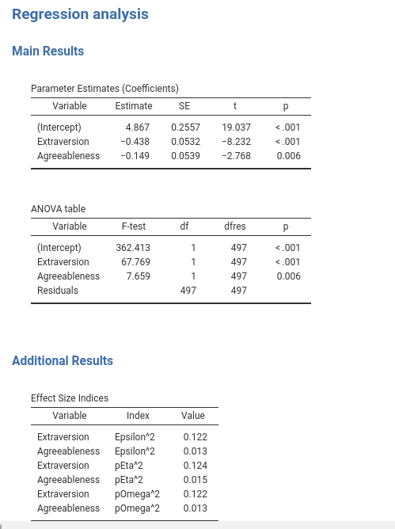
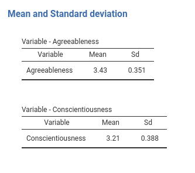
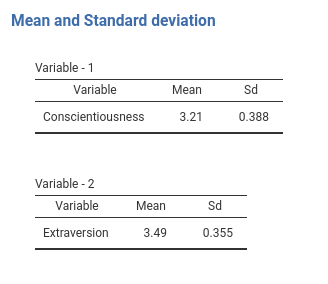
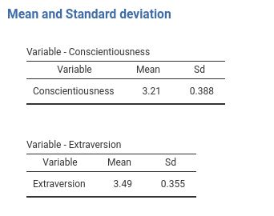

Chapter 4 Advanced Results Objects
4.1 Introduction
So far we defined jmvcore::Table objects. Tables, however, are not the only jmvcore::Results object available to the module developer. The results will usually go into tables, but the result tables can be organized in a more rational way, or be created programmatically depending on the module needs. Here are a few useful objects.
4.2 Groups (jmvcore::Group)
A useful object is the jmvcore::Group. Groups allow structuring the result tables into sections. Assume, for instance, we want to put our coefficients and anova tables in a Main Results section of the output, and our effects table under Additional Output, to be filled later on with other tables.
We should change the r.yaml file introducing the Group object:
---
name: myRegression
title: Regression analysis
jrs: '1.1'
items:
- name: main
type: Group
title: Main Results
items:
- name: coefficients
title: Parameter Estimates (Coefficients)
type: Table
columns:
- name: var
title: "Variable"
type: text
...
## here the remaing of the columns as defined before
- name: anova
title: ANOVA table
type: Table
columns:
- name: var
title: "Variable"
type: text
...
## here the remaing of the columns as defined before
- name: additional
type: Group
title: Additional Results
items:
- name: effects
title: Effect Size Indices
type: Table
columns:
- name: var
title: "Variable"
type: text
...
## here the remaing of the columns as defined beforeNotice that the definition of the tables has not changed, they are just organized under a Group with property title and items.
The logic of interfacing R code with the tables via a SmartTable object in file .b.R does not change as well, the only difference is that we should change the name of the table. In the self$results list, tables are now referred to as self$results$groupname$tablename.
## same code as before here
...
.init = function() {
if (!is.something(self$options$dep) | !is.something(self$options$covs))
return()
# define the runner
private$.runner<-Runner$new(self)
# set up the coefficients SmartTable
atable<-SmartTable$new(self$results$main$coefficients,private$.runner)
# put the SmartTable in the list
private$.tables[[length(private$.tables)+1]]<-atable
# set up the anova SmartTable
atable<-SmartTable$new(self$results$main$anova,private$.runner)
# put the SmartTable in the list
private$.tables[[length(private$.tables)+1]]<-atable
atable<-SmartTable$new(self$results$additional$effects,private$.runner)
# put the SmartTable in the list
private$.tables[[length(private$.tables)+1]]<-atable
# the remaining code does not change
...Consequently, in the Runner.R file their associated function should be named run_[groupname]_[tablename], because they [groupname]_[tablename] nickname uniquely identifies each table. In Runner.R code:
run_main_coefficients=function() {
.summary <- summary(self$model)
coeffs <- .summary$coefficients
coeffs <- as.data.frame(coeffs)
names(coeffs) <- c("coef","se","t","p")
coeffs$var <- rownames(coeffs)
return(coeffs)
},
run_main_anova=function() {
.anova <- as.data.frame(car::Anova(self$model,type=3))
names(.anova) <- c("nothing","df1","test","p")
.anova$df2 <- self$model$df.residual
.anova$var <- rownames(.anova)
return(.anova)
},
run_additional_effects=function() {
eps <- effectsize::epsilon_squared(self$model)
eps_df <- data.frame(var=eps$Parameter,index="Epsilon^2",value=eps$Epsilon2)
eta <- effectsize::eta_squared(self$model)
eta_df <- data.frame(var=eta$Parameter,index="pEta^2",value=eta$Eta2)
omega <- effectsize::omega_squared(self$model)
omega_df <- data.frame(var=eta$Parameter,index="pOmega^2",value=omega$Omega2)
tab <- rbind(eps_df,eta_df,omega_df)
return(tab)
},You should now have your output organized in sections like this:

4.3 Arrays of tables (jmvcore::Array)
Arrays of tables are complex objects that allow for a lot of flexibility in setting up results tables. They contain tables like groups do, but the number of tables created in an array is flexible and depends on the input or the results. We can distinguish two typical cases. When the number of tables depends on an option defined in the GUI (in the .a.yaml file), or when the number of tables depends on some calculation done in the R code, so not directly linked to an option. Let’s see the two cases in detail.
4.3.1 Array: known number of tables
Assume we want to produce a table for each covariate selected by the user. Say that for each covariate you want a separate table with the mean and standard deviation of the variable. Obviously, we do not know in advance how many independent variables the user will define, but as soon as the user defines them, jamovi can count the independent variables and know how many tables are needed. In our example, we can link the number of tables (items) attached to the Array object to the covs option. This can be done directly in the yaml code in .r.yaml file.
#...#
- name: means
title: Mean and Standard deviation
type: Array
items: (covs)
template:
title: Variable - $key
type: Table
columns:
- name: var
title: "Variable"
type: text
- name: mean
title: "Mean"
type: number
- name: sd
title: "Sd"
type: numberNotice the items property. We set it to (covs) to signal jamovi to take the contents of the option covs from the input, and create one table for each item found in covs. Thus, for each covariate selected by the user a Table is created as specified in the template: property. In the following example, I get two tables because I selected two covariates.

Notice the individual table title. It is set to the name of a covariate because in the title: property we use the special key $key, which means the name of the item found in items: variable. All this is done automatically by jamovi interpreter, so it is very easy and smooth to define arrays like this.
Now we can populated each table within the array. First, we go to the .b.R file and define the array.
## same code as before here
#...#
.init = function() {
## same code as before here
#...#
# set up the means SmartArray
obj<-SmartArray$new(self$results$means,private$.runner)
# put the SmartArray in the list
private$.tables[[length(private$.tables)+1]]<-obj
# the remaining code does not change
#...#Here we use a different jmvScaffold object, called SmartArray. Its API is equivalent to the one of a
SmartTable, but passes all the defined properties to the children tables.
In the Runner.R file we should set up a function named run_[arrayname] to fill it. This function should return a list of data.frame, one for each item selected in the option associated with the array. In our example, the function should return a list of data.frame, one for each covariate selected by the users. Obviously, it is the developer responsibility to return a list of length equal to the number of items in the array.
# ... #
run_means=function() {
tabs <- lapply(self$analysis$options$covs, function (x) {
m <- mean(self$analysis$data[[x]],na.rm=TRUE)
s <- sd(self$analysis$data[[x]],na.rm=TRUE)
data.frame(var=x,mean=m,sd=s)
})
return(tabs)
}
# ... #Results should now be nice as expected.

4.3.2 Array: Unknown number of tables
Recall the results in

Assume now, for some silly reason, that we want additional tables with means and standard deviations only for covariates that have a significant effect on the dependent variable. In this case, we do not know how many tables we need until we run the analysis and check the results. jmvScaffold::SmartArray can handle this case smoothly: It produces and fills as many tables as we pass to it with a list of data.frame. Let us see an example.
In the r.yaml file, we define a new Array as the one before, but without the items:(covs) property, because we do not know which of the covs variable will require a table. We also put the array under a group, because it looks better in the output page.
#...#
- name: sig
type: Group
title: Significant covariates
items:
- name: means
title: ""
type: Array
template:
title: Variable - $key
type: Table
clearWith:
- dep
- covs
columns:
- name: var
title: "Variable"
type: text
- name: mean
title: "Mean"
type: number
- name: sd
title: "Sd"
type: numberIn the Runner.R file, we simply need to define a run_sig_means() function to select the covariates that we want to display in the new tables.
#...#
run_sig_means=function() {
## select the covs ##
results <- as.data.frame(summary(self$model)$coefficients)
results <- results[-1,]
whichcovs <- rownames(results[results[,4]<.05,])
## make the tables
tabs <- lapply(whichcovs, function (x) {
m <- mean(self$analysis$data[[x]],na.rm=TRUE)
s <- sd(self$analysis$data[[x]],na.rm=TRUE)
data.frame(var=x,mean=m,sd=s)
})
return(tabs)
}Finaly, we add the new array to the list of smart objects in the .b.R files.
## same code as before here
#...#
.init = function() {
## same code as before here
#...#
# set up the sig_means SmartArray
obj<-SmartArray$new(self$results$sig$means,private$.runner)
# put the SmartArray in the list
private$.tables[[length(private$.tables)+1]]<-obj
# the remaining code does not change
#...#and we can check after re-installing that the module is working as intended.

Now pay attention to the tables titles. They are now Variable - 1 and Variable - 2 because we do not have any key defined. No problem, we can pass the keys to the SmartArray as an attribute of the data we pass to it. Just add to the run_means() function the line and you have your nice titles.
# ... #
run_sig_means=function() {
## select the covs ##
results <- as.data.frame(summary(self$model)$coefficients)
results <- results[-1,]
whichcovs <- rownames(results[results[,4]<.05,])
## make the tables
tabs <- lapply(whichcovs, function (x) {
m <- mean(self$analysis$data[[x]],na.rm=TRUE)
s <- sd(self$analysis$data[[x]],na.rm=TRUE)
data.frame(var=x,mean=m,sd=s)
})
attr(tabs,"keys")<-whichcovs ## passing the keys to the jamovi table
return(tabs)
}
# ... #
4.4 Other Results objects
jamovi offers other results objects, very important to develop modules such as Image for diplaying plots, or Html widget to display text using html. They are not handled by jmvScaffold and can easely be filled by accessing to them directly.
Information about these objects can be found in jamovi hub: Results .